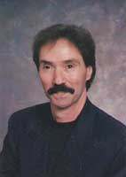

The Authors of Play-by-Play Sportscast Training
Alan Epstein, a veteran sportscaster, has broadcast numerous high school and college sporting events, including Pepperdine University basketball, Nevada Las Vegas football, and UCLA baseball.
Epstein has announced high school football, basketball, and baseball on numerous media outlets throughout Southern California. He also calls the play-by-play for polo during the summer months at Will Rogers State Park in Pacific Palisades.
In 2003, Epstein, along with Mark Ceccanese, started AlanMark Sports Productions, a Menu production and broadcast company that produces high school and college sporting events on the internet.
Epstein has worked over 40 years as the Digital TV (ESPN+, Big 10+) and radio play by play announcer for Pepperdine University basketball, as well as calling men and women's volleyball, women's soccer, and baseball. Epstein, a 2015 Pepperdine University Hall of Fame inductee, also was named the 2003 of the West Coast Conference's "Sam Goldman Award." The award is given annually to a member of the media whose coverage of collegiate athletics in general, and the WCC in particular, displays excellence.
A former Associated Press West Coast Award Winner for his work, Epstein co-authored "Play-By-Play Sportscast Training," one of the first and only play-by-play texts. The book is a complete fundamental text that includes instruction in areas such as play-by-play, color commentary, interviewing techniques, game preparation, and much more.
In January 2001, Epstein was inducted into the Southern California Jewish Sports Hall of Fame, recognizing his longtime commitment to broadcasting local collegiate and high school sports.
A graduate of Beverly Hills High, Epstein earned a Bachelor's Degree in Broadcast Journalism from California State Los Angeles.
Epstein has been an instructor in announcing and sportscasting for over 15 years at the Columbia School of Broadcasting, and had been involved with the Sportscaster Camps of America. A former Sports Information Director at Santa Monica College, Epstein was a member of the "famed" Temple City Kazoo Orchestra, which performed a number of years ago and once opened for David Letterman at a local nightclub.
Lou Riggs began broadcasting sports play-by-play in Southern California in 1970, including college football (SMC), basketball (Pepperdine/UCLA), baseball(UCLA), in addition to professional volleyball. He hosted interview shows for several radio stations during the same period of time, including National Public Radio. He was Sports Director for KCRW for 15 years and was Sports Editor of the Los Angeles Times Audio-Tex News Service.

Born and raised in West Los Angeles, Riggs received his Associate of Arts Degree in Broadcasting/Journalism at Santa Monica College, his Bachelor of Arts Degree in Journalism from California State University, Los Angeles. He taught in the Radio-Television Department at CSUN for five years and has been teaching Sportscasting play-by-play at Santa Monica college since 1985, in addition to speech and communications. He was a national instructor at Columbia School of Broadcasting from 1984 to the present. He also co-anchored the television and radio broadcasts at Santa Anita Race Track in Arcadia, California.
Lou is considered the "Teacher to the Stars" and many Fox Sports broadcasters of today. Among his client list: Chris Marlowe (NBC, Fox, Denver Nuggets), Heather Cox (TNT), James Worthy (Channel 9/LA), Kareem Abdul-Jabbar (Fox), Keith Erickson (Phoenix Suns/TV), Jim Murray (Fox TV/Bend, Oregon), and many more.